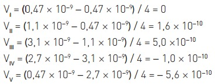

Em um exame clínico, monitorou-se a concentração de um hormônio no sangue de um paciente, das 14 h de um dia às 10 h do dia seguinte. Os resultados do monitoramento, organizados em períodos de quatro horas, estão apresentados no gráfico abaixo.
A maior taxa de produção do hormônio, em mol.mL–1.h–1, verificada em um dos cinco períodos do exame, corresponde a:
(A) 1,0 × 10−10
(B) 2,0 × 10−10
(C) 4,0 × 10−10
(D) 5,0 × 10−10
Alternativa correta: (D)
A taxa de reação de um componente em uma reação química é calculada a partir da variação de sua concentração ao longo de um determinado período de tempo. Note-se que os períodos de tempo do monitoramento são todos iguais a 4 horas. Assim, para cada período de tempo analisado, têm-se as seguintes taxas médias de reação do hormônio, em mol.L-1.h-1:
No período I, não há variação na concentração de formação do hormônio, sendo sua taxa de formação igual a zero. Nos períodos IV e V, a taxa de formação do hormônio é negativa, pois neles há redução da concentração do hormônio em função do tempo. Assim, em IV e em V, a velocidade média corresponde ao consumo e não à produção. Apenas nos períodos II e III, há formação do hormônio, encontrando-se em III a maior taxa de formação, igual a 5,0 ×10-10 mol.L-1.h-1.